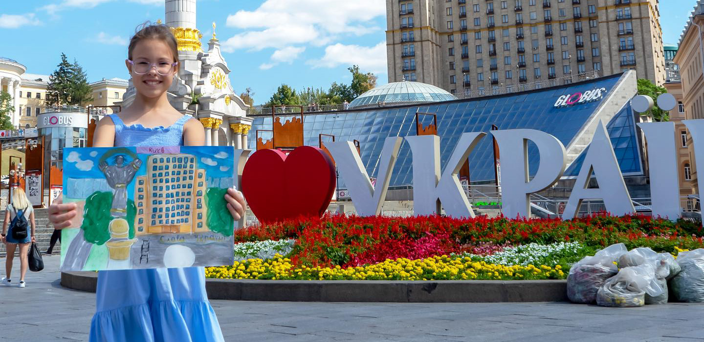

Тиждень тому Богданка підійшла до мене й каже: «Я намалювала Незалежність».
Я подивилась на малюнок і зрозуміла, що потрібно поїхати на Майдан.

Після подій Революції Гідності мені важко там бувати. Ця вулиця тепер у моїй пам'яті пахне морозом, вогнем і кров'ю. У мене перед очима Інститутська постріляна кулями, згорілий Будинок профспілок і прощання із загиблими на Майдані.
Але ми поїхали щоб сфотографувати Богданчину картину біля Монументу Незалежності України і запам'ятати це день.
Хрещатик і Майдан цього разу мав зовсім іншу атмосферу.
Дорога була перекрита. На ній саме встановлювали підбиту та спалену російську військову техніку. Гуляли сім'ї з дітьми. Чекали своєї черги щоб сфотографуватись біля слів «Я люблю Україну». Віддалік знімали на відео ржаві російські танки. А потім підходили до галявини з прапорцями, на яких чорним маркером написані імена Героїв-Захисників України, що пішли на небо, аби ми жили. Мами і бабусі біля цих прапорців говорили до дітей майже пошепки. Ніби боялись виявити неповагу до цього місця. Діти клали колоски, квіти і ставили маленькі свічечки. Вони теж були тихі і спокійні.
Чоловік – іноземець з великим рюкзаком англійською мовою попросив ростову ляльку в костюмі Пса Патрона сфотографуватись разом на фоні стели. А потім на фоні клумби з квітами. Пес Патрон відповідав іноземцю англійською і щось розказував.
За моєю спиною чоловік хотів ближче підійти до розбитої чужинської техніки, але поліцейський попросив сьогодні ще дивитись з тротуару, а вже за кілька днів цю «виставку» відкриють і можна буде роздивитись ближче.
Атмосфера Хрещатика і Майдану знову змінилась. Мені здалось, що сьогодні головна вулиця столиці стала місцем шани. Поваги і пошани до тих молодих обличь на фотографіях біля прапорців, до жінок та дітей, які приходять туди щоб зберегти пам'ять. До тих титанів, які підбили оці російські машини для вбивств і тим самим врятували побратимів на передовій, а можливо і цивільних в тилу.
32-га річниця незалежності.
Другий рік у боротьбі за цю Незалежність.
Нехай 33-тя буде ПЕРЕМОЖНОЮ!